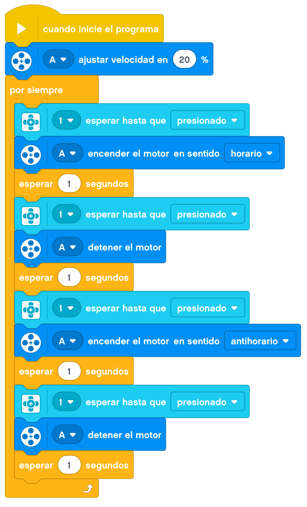

Montaremos una mano robótica en el siguiente tema que será capaz de coger objetos a su alcance.

La mano moverá por un lado el dedo pulgar y por otro lado el resto de dedos (3 o 4 dedos más).
A continuación, mostraremos un ejemplo de construcción de una mano robótica.
Le añadimos el cableado y tenemos montada nuestra mano robótica.
Programaremos la mano robótica para que al pulsar una vez el botón, abra la mano, al volverlo a pulsar se
detenga, si lo pulsamos otra vez cierre la mano y si lo volvemnos a pulsar, se detenga. Esto lo haremos de
forma infinita para que podamos coger y mover objetos.
Podría quedar de la siguiente forma.

Nuestro proyecto terminado funcionaría así.